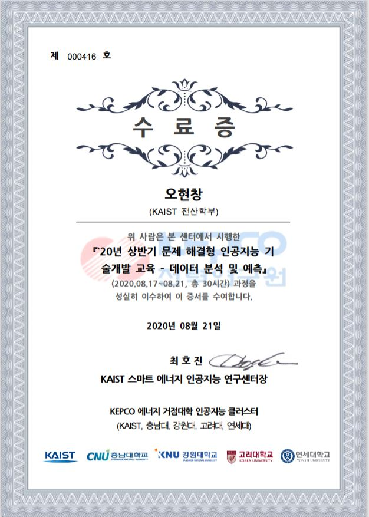

学历
KAIST
大田, 大韩民国
2017.03 - 2023.08 (义务兵役后预定毕业)
计算机/ 生命科学 双学位
取得《KAIST总长奖学金(KPF)》
取得《韩国大统领科学奖学金》
KAIST领导力认证制度 - 钻石级（最高级）
精灵能源/人工智能研究中心
修了《问题解决的人工智能技术开发教育》课程 - 自然语言处理与BERT实习 (韩文修了证)
×

修了《问题解决的人工智能技术开发教育》课程 - 资料分析与预测 (韩文修了证)
×

柏克莱加州大学
柏克莱, 加州, 美国
2017.06 - 2017.08
柏克莱加州大学夏校
多元微积分学, 一般心理学
KAIST总长支援宿舍费
KAIST附设韩国科学英才学校
釜山, 大韩民国
2014.02 - 2017.02
生命科学冠军毕业
Camborne科学与国际学校
康沃尔（Cornwall), 英国
2016 夏季
短期交换学生
制作火箭车原型
探查Godrevy海边的生态
莫斯科化学英才学校
莫斯科, 俄罗斯
2015.08
第十回化学夏校
合成有机抗生剂与探知重金属元素的有机传感器
著书
有机金属复合构造 (无机化学)
纳米化学研究室, 韩国科学英才学校 (최은영教授领导)
釜山, 大韩民国
第一著者, 国际学术期刊 "Tabular Organisation of Ionothermally Prepared MOFs To Extrapolate Chemical Trends and Successfully Predict Synthesis Results" Biomedical Journal of Scientific & Technical Research (2018)
第二著者, 国际学术期刊 "Microporous metal organic framework-based copolymers with efficient gas adsorption capability and high temporal stability" Macromolecular Research (2017)
第一著者, 国际学术期刊 "Ionothermal synthesis of a novel 3D cobalt coordination polymer with a uniquely reported framework:[BMI] 2 [Co2 (BTC) 2 (H2O) 2]."Advances in Materials Science and Engineering (2017)
第一著者, 国际学会 "The Effect of [RMI] X (R= alkyl; X= halide) Ionic Liquids on the Formation of M-H₃BTC Metal Organic Frameworks" Korean Polymer Society 40th Annual Conference (2016)
神经干细胞
动物细胞研究室, 韩国科学英才学校 (박기엽博士领导)
釜山，大韩民国
第二著者, 国内学术期刊 "Inhibition of Neurogenesis of Subventricular Zone Neural Stem Cells by 5-ethynyl-2-deoxyuridine (EdU)." 韩国生命科学会纸 (2017)
未出版研究
人间计算机相互作用
NMAIL (神经-机器增强只能研究室), 计算学部, KAIST (조성호 教授领导)
大田，大韩民国
2020.08-现在
研究实习生: 用脑波操作无人机
KIXLAB (相互作用研究室), 计算学部, KAIST (김주호 教授领导)
大田，大韩民国
2020.01-2020.08
研究实习生: 使用者谈话基盘个人词汇改正与扩张
微生物燃料电池
触媒与綠色能源研究室, 釜京大学 (우희철/장호남 教授领导)
釜山，大韩民国
第五回全国R&E共同发表会 - DGIST总长表彰
木质素能源微生物燃料电池： 制作分解木质素得能源的微生物燃料电池 (2015)
分析化学, 韩国科学英才学校 (천만석 博士领导)
釜山，大韩民国
微生物淡水化电池： 为了用微生物淡水化电池把韩国海水变成淡水，做离子交换膜，微生物群，微生物饮食实验(2016)
Sigma研究室, 国家初级学院
新加坡
微生物淡水化电池： 为了用微生物淡水化电池把新加坡海水变成淡水，跟各种微生物做电解质实验 (2017)
探知重金属元素的有机传感器
有机合成实验室, 韩国科学英才学校 (오진호 博士领导)
釜山，大韩民国
合成了探知各种重金属元素的有机传感器，做性能试验，用IR和NMR验证合成. (2015)
莫斯科化学英才学校
莫斯科, 俄罗斯
用各种各样的配体改善有机传感器的性能 (2015)
课外活动
著作和出版
KAIST研究杂志
大田，大韩民国
2020.08~ 现在
记者: 跟KAIST研究计划处一起计划第一号研究杂志。采访KAIST的研究者，写作报道介绍他们的研究。
大韩民国
2017.09-2019.06
学术部长: 报道KAIST的研究成果和最新科学技术论点。修订和编制技术报道。
文化部记者: 报道最新文化论点和艺术作品。
翻译
KAIST新生课程工程师
大田，大韩民国
2020.08~ 现在
译者:
翻译了KAIST一年级必需课程《开心大学生活》的教育资料
领导活动
KAIST总长奖学金学生会
国际部长:
跟印度IIT Madras计划与进行第一回《语境研究交流计划(Contextual Research Exchange Program)》
金奈, 印度
2019.08, 2020.1
学生代表
大田，大韩民国
2017.12-2018.12
管理学术研讨会: 管理和参加关于化学模型设计，机器学习，神经科学等各种各样的研讨会。
管理义工: 跟大田市儒城区政府一起指导邻近初中生。
KAIST实践领导力团体(K-Let)
领导: 关于自己尊重，进路设计等人生的问题进行讲演。
大韩民国
2017.02-2019.08
露营领导: 跟忠清南道教育厅进行被疏离阶层英才学生露营。
滨海州一带, 俄罗斯
2017.12-2018.01
教育与知识分享
第三回KAIST国际战略研究所论坛 (Youtube)
大田，大韩民国
2020.09
学生代表讨论参加者: 提高生命工学的发展和超人类主义的伦理问题
KAIST计算学部
大田，大韩民国
2019.08-现在
助教: CS101 (编程基础) 课程的实习助教。
补充资料著者: 写作CS101(编程基础)课程的实习，课题，和练习考试的答案和解说
KAIST编程团体(kOOk)
大田，大韩民国
2019.01-2020.02
研讨会进行: 说明HTML/CSS/MongoDB等基本网路技术
创立成员: 计划团体规律，还是营参加 Flask, R, 机器学习等编程研讨会
KAIST英才教育中心
教师: 教初中生Python编程
大田，大韩民国
2020.09-现在
临时教师: 用Arduino和Scratch进行编程实习
大田，大韩民国
2020.08
美谈学会
大田，大韩民国
2017.08-2017.12
英文教师: 教高中生英文。
获奖
庆州, 大韩民国
2016.08
(世界) 亚军: 制作社交网路，提供划词翻译功能和文章功能，让使用者体会外国文化和语言。
韩国科学英才学校R&E（研究和教育）工程
釜山, 大韩民国
2015.02~ 2015.12
第五回全国 R&E 共同发表会 - DGIST总长表彰
(校内) 个人优秀 / 团体奖励奖: 制作分解木质素得能源的微生物燃料电池 。
大田，大韩民国
2015.08~ 2015.12
(国内) 铜奖: 利用抗生素抵抗性基因开发放射线危害度诊断工具.
仁川，大韩民国
2015.01
(国内) 银奖: 调查尼龙纤维基板人工肌肉。还是，关于湿衣服显暗的现象进行研究。
个人项目
2019 Yet Nonamed Testing False Positive Speech Recognition Using Evolutionary Algorithms
2019 Travelling Salesman Problem Solver Solves Travelling Salesman Problem with Stochastic Algorithms
2019 Parapipe Task Organiser that Shapes Tasks as Parallel Pipelines
2019 re:Cruit Job Hunting Platform for Students
2019 PoZangZee Renovated Email System for Expert Users
2018 Mumurm Crowdsourcing Service for Restful Places
2016 Culang Culture & Language Exchange at Scale via Social Media
吉他技术
自然语言 韩语(母语)), 英语(第一语言), 汉语(HSK5级), 德语(初级), 俄语(初级), 西语(初级)
编程语言 Python, Javascript, Java, C, HTML/CSS
编程Framework Flask, MongoDB, ReactJS